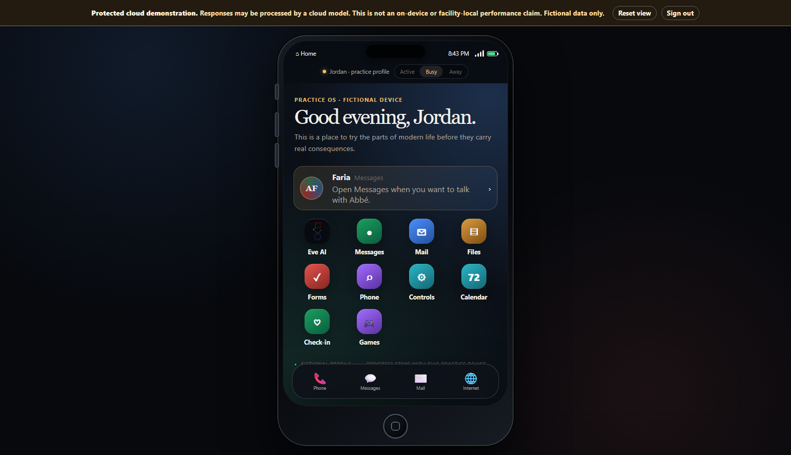

Make modern life less unfamiliar.
Practice files, forms, messages, appointments, digital identity, and other workflows using fictional information before the stakes are real.
 Abbé Faria
Request a demo
Abbé Faria
Request a demo
Governed learning for correctional education & reentry
Abbé Faria is a bounded learning environment that helps incarcerated learners build digital confidence, rehearse everyday reentry tasks, and use approved AI guidance—without opening the unrestricted internet.
Bounded · Human-centered · Governed
01 / The short answer
01Approved curriculumWhat may be taught
→02Fictional practiceWhere mistakes are safe
→03Bounded guidanceHelp without taking over
Practice files, forms, messages, appointments, digital identity, and other workflows using fictional information before the stakes are real.
Guide learning from an approved curriculum, see the evidence behind an answer, and measure defined skills instead of vague engagement.
Set content, access, retention, updates, and shutdown rules with the platform and facility rather than inheriting consumer-AI assumptions.
02 / See the idea
The current reference demo turns ordinary digital tasks into a fictional practice environment. Learners can explore a phone, messages, mail, files, forms, calendars, check-ins, games, and a conversation with Eve.

03 / The decision case
Correctional education is associated with better post-release outcomes, while mental-health needs are common in custody. Abbé Faria has a focused role: strengthen learning, confidence, and preparation while institutions evaluate outcomes with appropriate care.